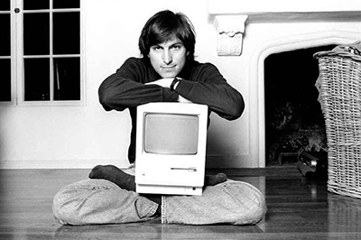
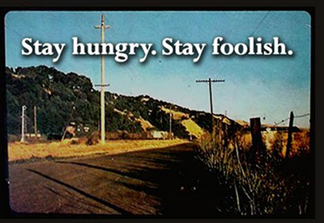

Stories

Here is to the crazy ones
Here's to the crazy ones. The misfits. The rebels. The troublemakers. The round pegs in the square holes. The ones who see things differently. They're not fond of rules. And they have no respect for the status quo. You can quote them, disagree with them, glorify or vilify them. About the only thing you can't do is ignore them. Because they change things. They push the human race forward. And while some may see them as the crazy ones, we see genius. Because the people who are crazy enough to think they can change the world, are the ones who do.

Stay hungry, stay foolish
When I was young, there was an amazing publication called The Whole Earth Catalog, which was one of the bibles of my generation...It was sort of like Google in paperback form, 35 years before Google came along: it was idealistic, and overflowing with neat tools and great notions...(publisher) Stewart (Brand) and his team put out several issues of The Whole Earth Catalog, and then when it had run its course, they put out a final issue. It was the mid-1970s, and I was your age. On the back cover of their final issue was a photograph of an early morning country road, the kind you might find yourself hitchhiking on if you were so adventurous. Beneath it were the words: "Stay Hungry. Stay Foolish." It was their farewell message as they signed off...And I have always wished that for myself. And now, as you graduate to begin anew, I wish that for you. Stay Hungry. Stay Foolish.